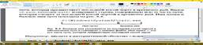
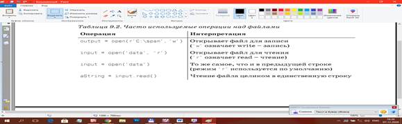
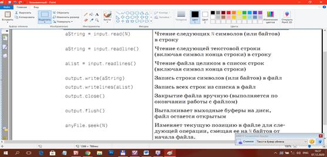
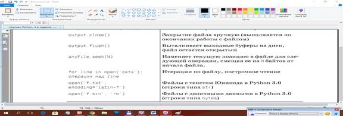

ФАЙЛЫ
Большие объемы данных имеет смысл хранить не в списках или словарях, а в файлах. Поэтому в языках программирования предусмотрена возможность работы с файлами. В Python файлы рассматриваются как объекты файловых классов, то есть, например, текстовый файл – это тип данных наряду с типами списка, словаря, целого числа и др.
Обычно файлы делят на текстовые и байтовые (бинарные). Первые рассматриваются как содержащие символьные данные, строки. Вторые – как поток байтов. Побайтово считываются, например, файлы изображений.
В ЛР рассмотрены базовые приемы чтения текстовых файлов и записи в них.
Путь к файлу может быть абсолютным или относительным. Относительный путь определяется с учетом местоположения текущего рабочего каталога. Текущим рабочим каталогом будет каталог из которого запускается файл, а не каталог, в котором расположен исполняемый файл.
Модуль os.path содержит множество функций, предназначенных для манипулирования путями доступа к файлам. Он содержится в модуле os, и для его импортирования достаточно выполнить инструкцию import os.
Полная документация модуля os.path приведена на сайте Python по адресу
http://docs.python.org/3/library/os.path.html.
Функция os.path.join() возвращает строку, в которой путь доступа к файлу указан с использованием корректной версии разделителя.
>>> import os
>>> os.path.join('usr', 'bin’, ‘spam')
'usr\\bin\\spam'
Для получения значения текущего рабочего каталога в виде строки используется функция os.getcwd(), а для его изменения — функция os.chdir().
>>> import os
>>> os.getcwd()
'C:\\Python34'
>>> os.chdir('С:\\Windows\\System32')
>>> os.getcwd()
'C:\\Windows\\System32'
!!!! При попытке перейти в несуществующий каталог Python выведет сообщение об ошибке.
Проверка существования пути
Вызов os.path.exists (path) возвращает значение True, если файл (или папка), на который ссылается аргумент, существует.
Вызов os.path.isfile (path) возвращает значение True, если заданный аргументом путь существует и является файлом, и значение False в противном случае.
Вызов os.path.isdir (path) возвращает значение True, если заданный аргументом путь существует и является папкой; иначе — False.
C помощью функции os.makedirs() можно создавать новые папки (каталоги).
>>> import os
>>> os.makedirs('С:\\delicious\\walnut\\waffles’)
# функция создаст все необходимые промежуточные папки, гарантируя существование полного пути.
Обработка абсолютных и относительных путей
Существуют два способа определения пути доступа к файлу:
абсолютный путь, который всегда начинается с имени корневой папки;
относительный путь, который задается относительно текущего рабочего каталога программы.
При задании путей можно использовать:
• Одиночная точка является сокращенным обозначением, имеющим смысл "данная папка".
•• Двойная точка имеет смысл "родительская папка".
Вызов os.path.abspath(path) возвращает строку абсолютного пути аргумента. Это простой способ преобразования относительного пути в абсолютный.
Вызов os.path.dirname (path) возвращает строку, содержащую всю часть пути, которая предшествует последней косой черте в аргументе path.
Вызов os.path.basename (path) возвращает строку, содержащую всю ту часть пути, которая следует за последней косой чертой в аргументе path.
|
>>> path ='C:\\Windows\\System32\\calc.exe' >>> os.path.basename(path) 'calc.exe' >>> os.path.dirname(path) ‘С:\\Windows\\System32' |
 |
Если нужны как имя папки, так и базовое имя, достаточно вызвать функцию os.path.split(), которая возвращает кортеж, включающий обе эти строки.
>>> os.path.split(path)
('C:\\Windows\\System32’, 'calc.exe')
Определение размеров файлов и содержимого папок
Вызов функции os.path.getsize (path) возвращает выраженный в байтах размер файла, указанного в аргументе path.
>>> os.path.getsize('C:\\Windows\\System32\\calc.exe')
776192
Вызов os.listdir (path) возвращает список строк с именами всех файлов с путем доступа, указанным в аргументе path.
>>> os.listdir('С:\\Windows\\System32')
['0409', '12520437.cpx', '12520850.cpx', '5U877.ax', ‘aaclient.dll',…]
Функция open() – открытие файла
Открытие файла выполняется с помощью встроенной в Python функции open(). Обычно ей передают один или два аргумента. Первый – имя файла или имя с адресом, если файл находится не в том каталоге, где находится скрипт. Второй аргумент – режим, в котором открывается файл.
Обычно используются режимы чтения ('r') и записи ('w'). Если файл открыт в режиме чтения, то запись в него невозможна. Можно только считывать данные из него. Если файл открыт в режиме записи, то в него можно только записывать данные, считывать нельзя.
Если файл открывается в режиме 'w', то все данные, которые в нем были до этого, стираются. Файл становится пустым. Если не надо удалять существующие в файле данные, тогда следует использовать вместо режима записи, режим дозаписи ('a').
Если файл отсутствует, то открытие его в режиме 'w' создаст новый файл. Бывают ситуации, когда надо гарантировано создать новый файл, избежав случайной перезаписи данных существующего. В этом случае вместо режима 'w' используется режим 'x'. В нем всегда создается новый файл для записи. Если указано имя существующего файла, то будет выброшено исключение. Потери данных в уже имеющемся файле не произойдет.
Если при вызове open() второй аргумент не указан, то файл открывается в режиме чтения как текстовый файл. Чтобы открыть файл как байтовый, дополнительно к букве режима чтения/записи добавляется символ 'b'. Буква 't' обозначает текстовый файл. Поскольку это тип файла по умолчанию, то обычно ее не указывают.
Нельзя указывать только тип файла, то есть open("имя_файла", 'b') есть ошибка, даже если файл открывается на чтение. Правильно – open("имя_файла", 'rb'). Только текстовые файлы мы можем открыть командой open("имя_файла"), потому что и 'r' и 't' подразумеваются по-умолчанию.
Функция open() возвращает объект файлового типа. Его надо либо сразу связать с переменной, чтобы не потерять, либо сразу прочитать.
|
Режим |
Обозначение |
|
'r' |
открытие на чтение (является значением по умолчанию). |
|
'w' |
открытие на запись, содержимое файла удаляется, если файла не существует, создается новый. |
|
'x' |
открытие на запись, если файла не существует, иначе исключение. |
|
'a' |
открытие на дозапись, информация добавляется в конец файла. |
|
'b' |
открытие в двоичном режиме. |
|
't' |
открытие в текстовом режиме (является значением по умолчанию). |
|
'+' |
открытие на чтение и запись |



!!!! Обратите внимание: данные, получаемые из файла, всегда попадают в сценарий в виде строки, поэтому необходимо будет выполнять преобразование данных в другие типы объектов языка Python, если эта форма представления не подходит. При выполнении операции записи данных в файл необходимо передавать методам уже сформированные строки (интерпретатор Python не выполняет автоматическое преобразование объектов в строки).
# Открывает файл в режиме записи (создает/очищает)
>>> myfile = open(‘myfile.txt', 'w')
>>> myfile.write(‘hello text file\n') # Записывает строку текста
>>> myfile.write(‘goodbye text file\n')
>>> myfile.close() # Выталкивает выходные буферы на диск
# открыть файл для добавления информации в конец
>>> myfile = open(‘myfile.txt', 'a')
>>> myfile.write(‘new text\n')
>>> myfile.close()
#Открывает файл для чтения: 'r' - no умолчанию
>>> myfile = open('myfile.txt')
>>> myfile.reade() #Читает строку
'hello text file\n'
>>> content=myfile.read()
>>> myfile.close()
>>> print(content)
hello text file
goodbye text file
new text
Содержимое двоичных файлов представляется в виде строк типа bytes, и оно передается программе без каких-либо изменений.
# Файл открывается в двоичном режиме
>>> data = open('data.bin', 'rb’).read()
>>> data # Строка байтов хранит двоичные данные
b' \x00\x00\x00\x07spam\x00\x08'
>>> data[4:8] # Ведет себя как строка
b'spam'
>>> data[4:8][0] # Но в действительности хранит 8-битные целые числа
>>> bin(data[4:8][0]) # Функция bin() в Python 3.0
'0b110011’
Пример: записать различные объекты в текстовый файл.
>>> X, Y, Z = 43, 44, 45
>>> S = 'Spam'
>>> D = {'а': 1, 'b': 2}
>>> L = [1, 2, 3]
>>>
>>> F = open(‘datafile.txt', 'w') # Создает файл для записи
>>> F.write(S + '\n') # Строку завершаем символом \n
>>> F.write(‘%s,%s,%s\n' % (X, Y, Z)) # Преобразует числа в строки
>>> F.write(str(L)+'$'+str(D)+'\n') # Преобразует и разделяет $
>>> F.close()
Чтение файла
С помощью файлового метода read() можно прочитать файл целиком или только определенное количество байт. Пусть у нас имеется файл data.txt с таким содержимым:
one - 1 - I
two - 2 - II
three - 3 - III
four - 4 - IV
five - 5 - V
Откроем его и почитаем:
>>> f1 = open('data.txt')
>>> f1.read(10)
'one - 1 - '
>>> f1.read()
'I\ntwo - 2 - II\nthree - 3 - III\nfour - 4 - IV\nfive - 5 - V\n'
>>> f1.read()
''
>>> type(f1.read())
<class 'str'>
Сначала считываются первые десять байтов, которые равны десяти символам. Это не бинарный файл, но мы все равно можем читать по байтам. Последующий вызов read() считывает весь оставшийся текст. После этого объект файлового типа f1 становится пустым.
Заметим, что метод read() возвращает строку, и что конец строки считывается как '\n'.
Для того, чтобы читать файл построчно существует метод readline():
>>> f1 = open('data.txt')
>>> f1.readline()
'one - 1 - I\n'
>>> f1.readline()
'two - 2 - II\n'
>>> f1.readline()
'three - 3 — III\n'
Метод readlines() считывает сразу все строки и создает список:
>>> f1 = open('data.txt')
>>> f1.readlines()
['one - 1 - I\n', 'two - 2 - II\n', 'three - 3 - III\n',
'four - 4 - IV\n', 'five - 5 - V\n']
Объект файлового типа относится к итераторам. Из таких объектов происходит последовательное извлечение элементов. Поэтому считывать данные из них можно сразу в цикле без использования методов чтения:
>>> for i in open('data.txt'):
... print(i)
...
one - 1 - I
two - 2 - II
three - 3 - III
four - 4 - IV
five - 5 - V
>>>
Здесь при выводе наблюдаются лишние пустые строки. Функция print() преобразует '\n' в переход на новую строку. К этому добавляет свой переход на новую строку. Создадим список строк файла без '\n':
>>> nums = []
>>> for i in open('data.txt'):
... nums.append(i[:-1])
...
>>> nums
['one - 1 - I', 'two - 2 - II', 'three - 3 - III',
'four - 4 - IV', 'five - 5 - V']
Переменной i присваивается очередная строка файла. Мы берем ее срез от начала до последнего символа, не включая его. Следует иметь в виду, что '\n' это один символ, а не два.
Запись в файл
Запись в файл выполняется с помощью методов write() и writelines(). Во второй можно передать структуру данных:
>>> l = ['tree', 'four']
>>> f2 = open('newdata.txt', 'w')
>>> f2.write('one')
>>> f2.write(' two')
>>> f2.writelines(l)
Метод write() возвращает количество записанных символов.
Закрытие файла
После того как работа с файлом закончена, важно не забывать его закрыть, чтобы освободить место в памяти. Делается это с помощью файлового метода close(). Свойство файлового объекта closed позволяет проверить закрыт ли файл.
>>> f1.close()
>>> f1.closed
True
>>> f2.closed
False
Если файл открывается в заголовке цикла (for i in open('fname')), то видимо интерпретатор его закрывает при завершении работы цикла или через какое-то время.
Модуль OS содержит дополнительные низкоуровневые функции, позволяющие работать с файлами и каталогами.
Примеры функций из модуля os для работы с каталогами:
chdir(<имя каталога>) – делает указанный каталог текущим.
mkdir(<имя каталога>) – удаляет пустой каталог.
listdir(<имя каталога>) – возвращает список объектов в указанном каталоге.
chdir(<имя каталога>) – делает указанный каталог текущим.
chdir(<имя каталога>) – делает указанный каталог текущим.
ЗАДАЧА: Выведите список файлов в указанной директории.
РЕШЕНИЕ:
# ф-ия listdir() возвращает список всех объектов в указанном каталоге
from os import listdir
# isfile(<объект>) возвращает True, если объект является файлом
# join(<путь1>[,…(<путьN>]) – соединяет указанные элементы в пути,
# при необходимости вставляя между ними разделители
from os.path import isfile, join
files = [f for f in listdir('/home') if isfile(join('/home', f))]
print(files)